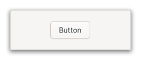

Gtk.Button¶
Example¶

- Subclasses:
Methods¶
- Inherited:
Gtk.Widget (183), GObject.Object (37), Gtk.Accessible (18), Gtk.Buildable (1), Gtk.Actionable (5)
- Structs:
class |
|
class |
|
class |
|
class |
|
|
|
|
|
|
|
|
|
|
|
|
|
|
|
|
Virtual Methods¶
- Inherited:
Gtk.Widget (25), GObject.Object (7), Gtk.Accessible (7), Gtk.Buildable (9), Gtk.Actionable (4)
|
|
|
Properties¶
- Inherited:
Name |
Type |
Flags |
Short Description |
|---|---|---|---|
r/w/en |
|||
r/w/en |
|||
r/w/en |
|||
r/w/en |
|||
r/w/en |
|||
r/w/en |
Signals¶
- Inherited:
Name |
Short Description |
|---|---|
Emitted to animate press then release. |
|
Emitted when the button has been activated (pressed and released). |
Fields¶
- Inherited:
Name |
Type |
Access |
Description |
|---|---|---|---|
parent_instance |
r |
Class Details¶
- class Gtk.Button(**kwargs)¶
- Bases:
- Abstract:
No
- Structure:
Calls a callback function when the button is clicked.
<picture> <source srcset=”button-dark.png” media=”(prefers-color-scheme: dark)”> <img alt=”An example
Gtk.Button" src=”button.png”> </picture>The
GtkButtonwidget can hold any valid child widget. That is, it can hold almost any other standardGtkWidget. The most commonly used child is theGtkLabel.- Shortcuts and Gestures
The following signals have default keybindings:
[signal`Gtk`.Button::activate]
- CSS nodes
GtkButtonhas a single CSS node with name button. The node will get the style classes .image-button or .text-button, if the content is just an image or label, respectively. It may also receive the .flat style class. When activating a button via the keyboard, the button will temporarily gain the .keyboard-activating style class.Other style classes that are commonly used with
GtkButtoninclude .suggested-action and .destructive-action. In special cases, buttons can be made round by adding the .circular style class.Button-like widgets like [class`Gtk`.ToggleButton], [class`Gtk`.MenuButton], [class`Gtk`.VolumeButton], [class`Gtk`.LockButton], [class`Gtk`.ColorButton] or [class`Gtk`.FontButton] use style classes such as .toggle, .popup, .scale, .lock, .color on the button node to differentiate themselves from a plain
GtkButton.- Accessibility
GtkButtonuses the [enum`Gtk`.AccessibleRole.button] role.- classmethod new()[source]¶
- Returns:
The newly created
GtkButtonwidget.- Return type:
Creates a new
GtkButtonwidget.To add a child widget to the button, use [method`Gtk`.Button.set_child].
- classmethod new_from_icon_name(icon_name)[source]¶
- Parameters:
icon_name (
str) – an icon name- Returns:
a new
GtkButtondisplaying the themed icon- Return type:
Creates a new button containing an icon from the current icon theme.
If the icon name isn’t known, a “broken image” icon will be displayed instead. If the current icon theme is changed, the icon will be updated appropriately.
- classmethod new_with_label(label)[source]¶
- Parameters:
label (
str) – The text you want theGtkLabelto hold- Returns:
The newly created
GtkButtonwidget- Return type:
Creates a
GtkButtonwidget with aGtkLabelchild.
- classmethod new_with_mnemonic(label)[source]¶
- Parameters:
label (
str) – The text of the button, with an underscore in front of the mnemonic character- Returns:
a new
GtkButton- Return type:
Creates a new
GtkButtoncontaining a label.If characters in label are preceded by an underscore, they are underlined. If you need a literal underscore character in a label, use “__” (two underscores). The first underlined character represents a keyboard accelerator called a mnemonic. Pressing <kbd>Alt</kbd> and that key activates the button.
- get_can_shrink()[source]¶
- Returns:
true if the button can shrink, and false otherwise
- Return type:
Retrieves whether the button can be smaller than the natural size of its contents.
New in version 4.12.
- get_child()[source]¶
- Returns:
the child widget of self
- Return type:
Gtk.WidgetorNone
Gets the child widget of self.
- get_icon_name()[source]¶
-
Returns the icon name of the button.
If the icon name has not been set with [method`Gtk`.Button.set_icon_name] the return value will be
None. This will be the case if you create an empty button with [ctor`Gtk`.Button.new] to use as a container.
- get_label()[source]¶
- Returns:
The text of the label widget. This string is owned by the widget and must not be modified or freed.
- Return type:
Fetches the text from the label of the button.
If the label text has not been set with [method`Gtk`.Button.set_label] the return value will be
None. This will be the case if you create an empty button with [ctor`Gtk`.Button.new] to use as a container.
- get_use_underline()[source]¶
- Returns:
Trueif an embedded underline in the button label indicates the mnemonic accelerator keys.- Return type:
gets whether underlines are interpreted as mnemonics.
See [method`Gtk`.Button.set_use_underline].
- set_can_shrink(can_shrink)[source]¶
- Parameters:
can_shrink (
bool) – whether the button can shrink
Sets whether the button size can be smaller than the natural size of its contents.
For text buttons, setting can_shrink to true will ellipsize the label.
For icons and custom children, this function has no effect.
New in version 4.12.
- set_child(child)[source]¶
- Parameters:
child (
Gtk.WidgetorNone) – the child widget
Sets the child widget of self.
Note that by using this API, you take full responsibility for setting up the proper accessibility label and description information for self. Most likely, you’ll either set the accessibility label or description for self explicitly, or you’ll set a labelled-by or described-by relations from child to self.
- set_has_frame(has_frame)[source]¶
- Parameters:
has_frame (
bool) – whether the button should have a visible frame
Sets the style of the button.
Buttons can have a flat appearance or have a frame drawn around them.
- set_icon_name(icon_name)[source]¶
- Parameters:
icon_name (
str) – An icon name
Adds a
GtkImagewith the given icon name as a child.If self already contains a child widget, that child widget will be removed and replaced with the image.
- set_label(label)[source]¶
- Parameters:
label (
str) – a string
Sets the text of the label of the button to label.
This will also clear any previously set labels.
- set_use_underline(use_underline)[source]¶
-
Sets whether to use underlines as mnemonics.
If true, an underline in the text of the button label indicates the next character should be used for the mnemonic accelerator key.
- do_activate() virtual¶
Signal that causes the button to animate press then release. Applications should never connect to this signal, but use the clicked signal.
- do_clicked() virtual¶
Signal emitted when the button has been activated (pressed and released).
Signal Details¶
- Gtk.Button.signals.activate(button)¶
- Signal Name:
activate- Flags:
- Parameters:
button (
Gtk.Button) – The object which received the signal
Emitted to animate press then release.
This is an action signal. Applications should never connect to this signal, but use the [signal`Gtk`.Button::clicked] signal.
The default bindings for this signal are all forms of the <kbd>␣</kbd> and <kbd>Enter</kbd> keys.
- Gtk.Button.signals.clicked(button)¶
- Signal Name:
clicked- Flags:
- Parameters:
button (
Gtk.Button) – The object which received the signal
Emitted when the button has been activated (pressed and released).
Property Details¶
- Gtk.Button.props.can_shrink¶
- Name:
can-shrink- Type:
- Default Value:
- Flags:
Whether the size of the button can be made smaller than the natural size of its contents.
For text buttons, setting this property will allow ellipsizing the label.
If the contents of a button are an icon or a custom widget, setting this property has no effect.
New in version 4.12.
- Gtk.Button.props.child¶
- Name:
child- Type:
- Default Value:
- Flags:
The child widget.
- Gtk.Button.props.has_frame¶
- Name:
has-frame- Type:
- Default Value:
- Flags:
Whether the button has a frame.
- Gtk.Button.props.icon_name¶
- Name:
icon-name- Type:
- Default Value:
- Flags:
The name of the icon used to automatically populate the button.
- Gtk.Button.props.label¶
- Name:
label- Type:
- Default Value:
- Flags:
Text of the label inside the button, if the button contains a label widget.